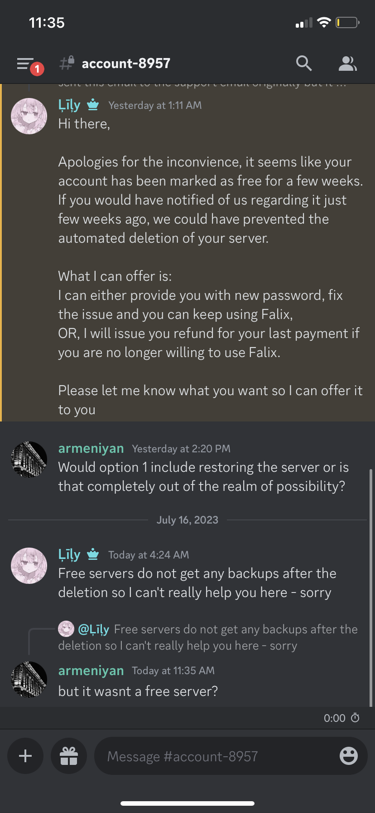
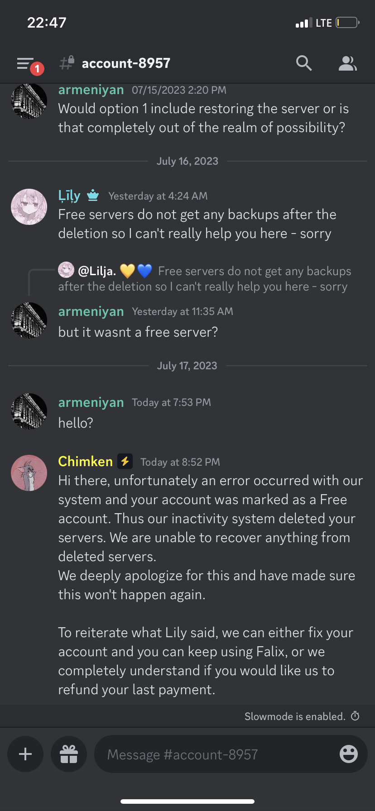
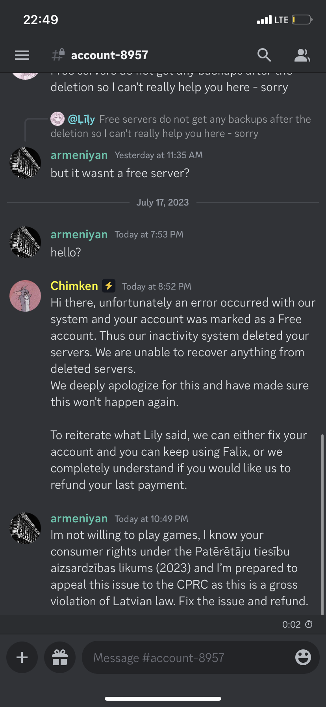
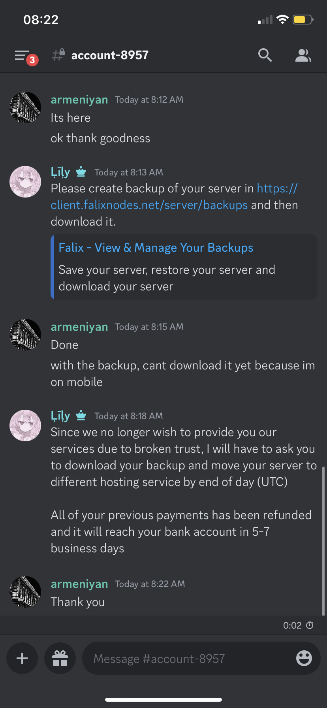
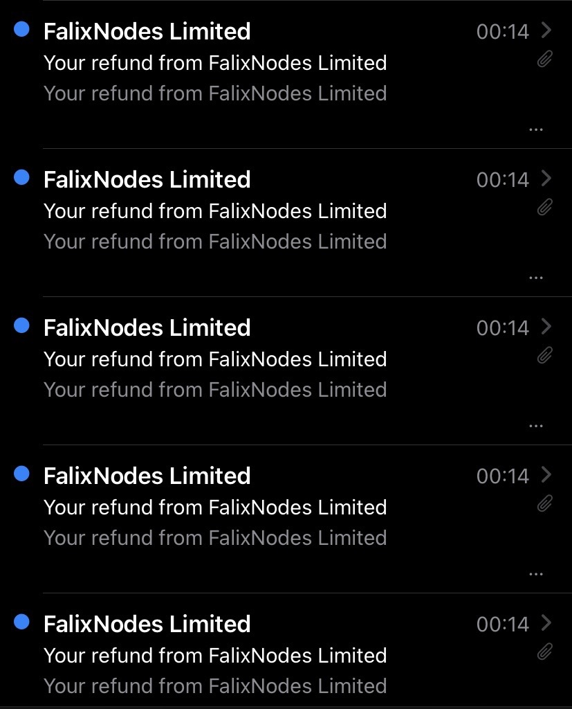

July 18th, 2023.
The server has been offline since July 12th, and I know that over the past six days you all have had many questions about where the server went and the future of the server. This post is going to answer your questions, and talk about one of the admin team's greatest frustrations: our host.
Let's talk a bit about the history of the server. When I joined, it was just a simple Bedrock Edition world, but with some add-ons (the Bedrock version of Java mods). Later, we began searching for a better option so we could have access to Java plugins and players. We stumbled upon falixnodes, which offered a free plan with 4GB memory. The only catch was, of course, that the server wasn't online 24/7. But we could live with that, as that was how the Bedrock world was hosted! We added Geyser, Towny, and Dynmap (the free plan at the time had 3 ports available, which we used for dynmap, but they were later removed.)
We had some fun, and decided to do a reset as the playerbase had died after a week. We added a person named Clay to the development team, whom I thank for teaching me many things about managing servers such as permissions (although, we later had to remove him as a pre-emptive measure, because he had nuked another Minecraft server that he was a developer on). Our playerbase was significantly larger during that iteration, yet the lack of 24/7 hosting turned them off really quickly yet again.
We decided to do another reset, but this time, Comrade was paying for the Falixnodes premium plan (€5). If you've been in this server for a long time, you probably know it as "GlobalSphere Season 1" and you know it didn't last for a very long time. But I'm not here to explain the entire server lore and history. So let's get into the problems.....
Let me start this off by describing smaller, but still very annoying problems we had with Falixnodes over the course of the server.
While it is normal for free services to have outages and waiting queues, the Falixnode premium nodes had many outages and often the server was offline for hours (we couldn't even access the panel). They eventually fixed this issue.
When we bought the €5 plan, it had 4GB of RAM. When our server grew larger, we began experiencing issues. When the server was on for a long time, it would run out of RAM and crash, making all of the progress in that session not save. We decided to add an automatic restart plugin to reboot the server every 4 hours. Later (at an unknown time), Falixnodes increased the amount of RAM in the €5 plan to 5GB, but they never told us nor did they upgrade our server (so we were paying the same price for less resources!) Eventually, when the GlobalSphere team noticed this, we opened a ticket with Falixnodes and they gave us the 5GB that we should have received. This wasn't really a major issue, but it could have prevented a lot of server restarts (which really annoyed players).
Another EXTREMELY annoying issue was the constant false adblock triggers on the server panel. This stopped us from adding/removing files and from executing commands via the panel (meaning we had to go in-game to do anything). Falixnodes eventually fixed the bug, but then it came back a while later, and then got fixed again.
This is unrelated to us, but it is known that the Falixnodes owner has done many shitty things, you can probably dig it up if you do some searches on google.
On July 12th, I woke up to see that the server had seemingly crashed. I decided to go start it up again and update some of our plugins at the same time. To my surprise, when I went on the panel, it said that the server was deleted for "non-payment or abuse." I contacted Comrade and Kodo, and Comrade decided to ask Falixnodes what happened. It appears that they have "accidentally downgraded him to the free plan" and deleted his server, but they still took his money. They tried to get us to choose from an ultimatum: get refunded for the month or get the premium plan back (without the server).


It seemed as though the server was doomed at this point, but luckily Kodo had some experience with Latvian law. He told us to copy and paste a message, and we tried it, as we were all out of "peaceful" options.

It worked! Falixnodes wanted to avoid a case with the Consumer Rights Protection Centre, and so they refunded us for EVERY SINGLE MONTH of serverhosting we had with them (all the way back to April 2022), restored the server (huh, I guess it being deleted WAS bullshit?), and told us to download a backup and go to another host within 24 hours as our "trust had been broken."


So as of right now, the server is still currently down, but we have the backup downloaded and are looking for another host. And that, ladies and gentlemen, is the story of GlobalSphere and Falixnodes.